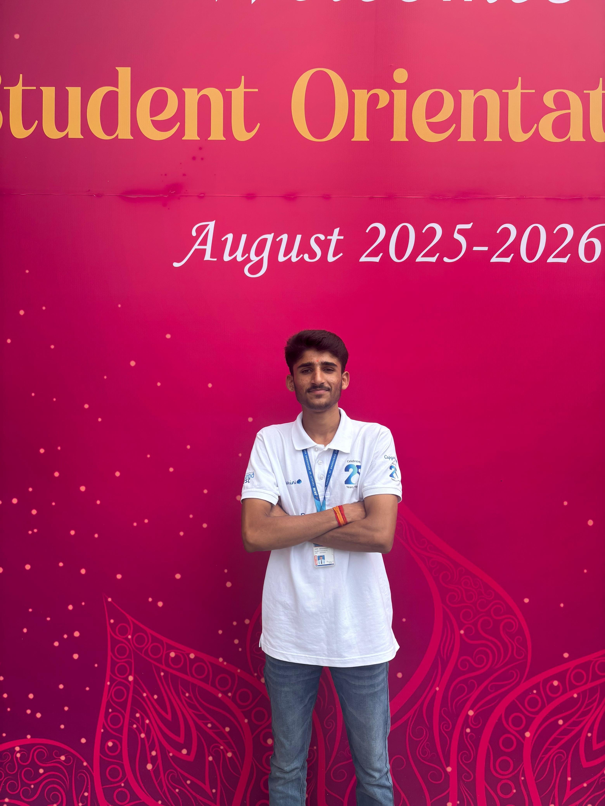
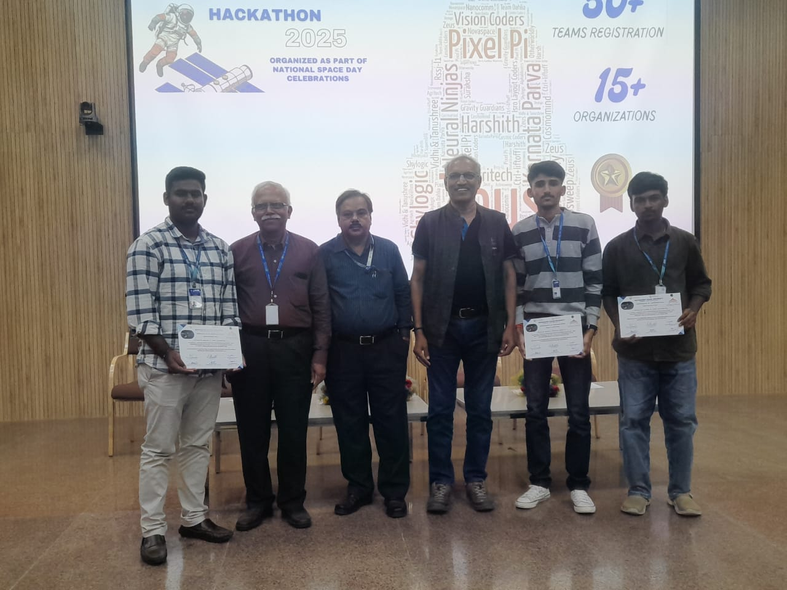

ನಮಸ್ಕಾರ
Hello, I'm Adhi Gowda ಕನ್ನಡಿಗ
> 2nd Year Engineering Student
> Cloud SRE & DevOps Enthusiast
> Cybersecurity Learner
B.Tech Computer Science student at Jain University focused on Linux, cloud infrastructure, and networking. I build hands-on projects in Cloud SRE, DevOps, and infrastructure security with the goal of designing reliable, secure, and scalable systems.

